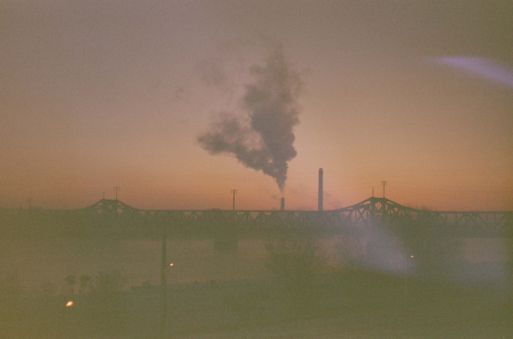
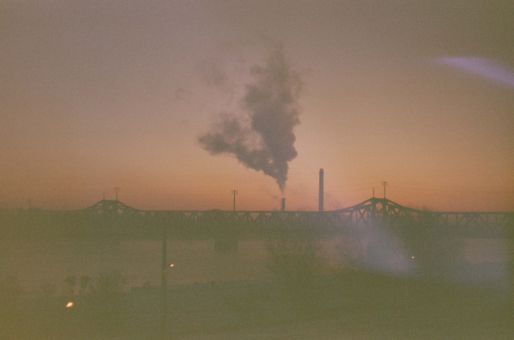

 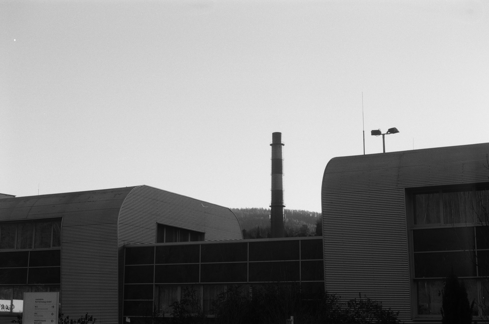
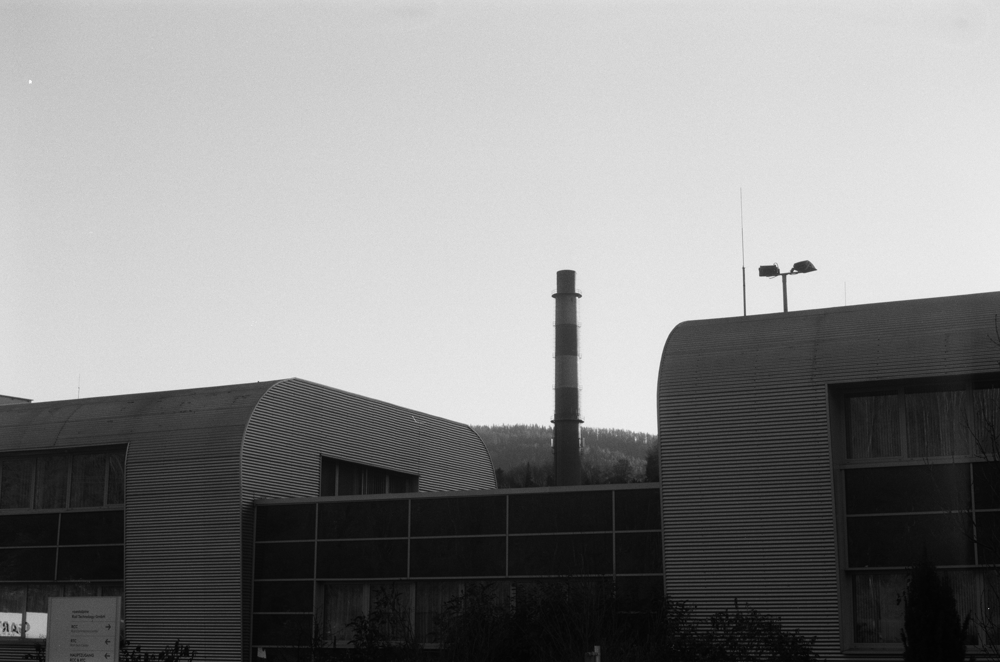
 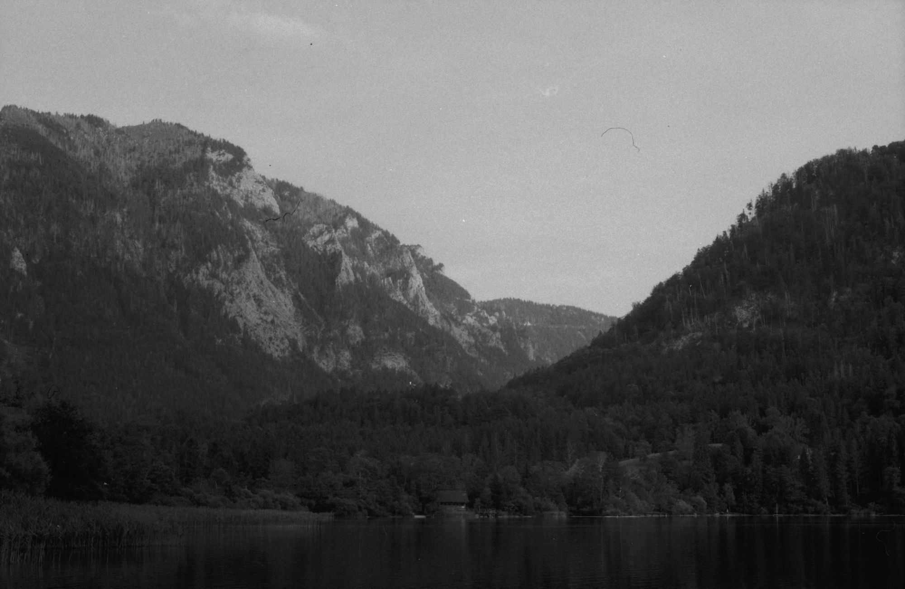
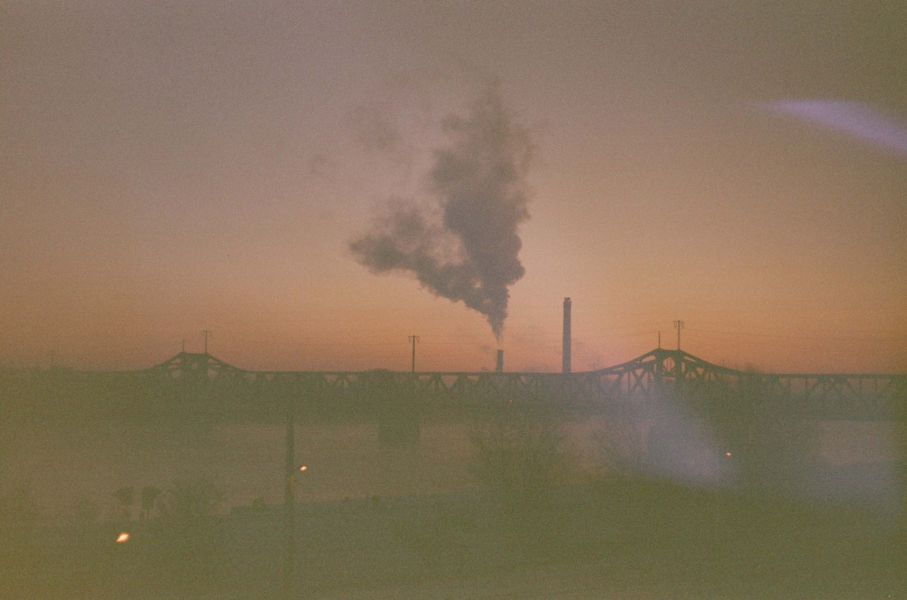
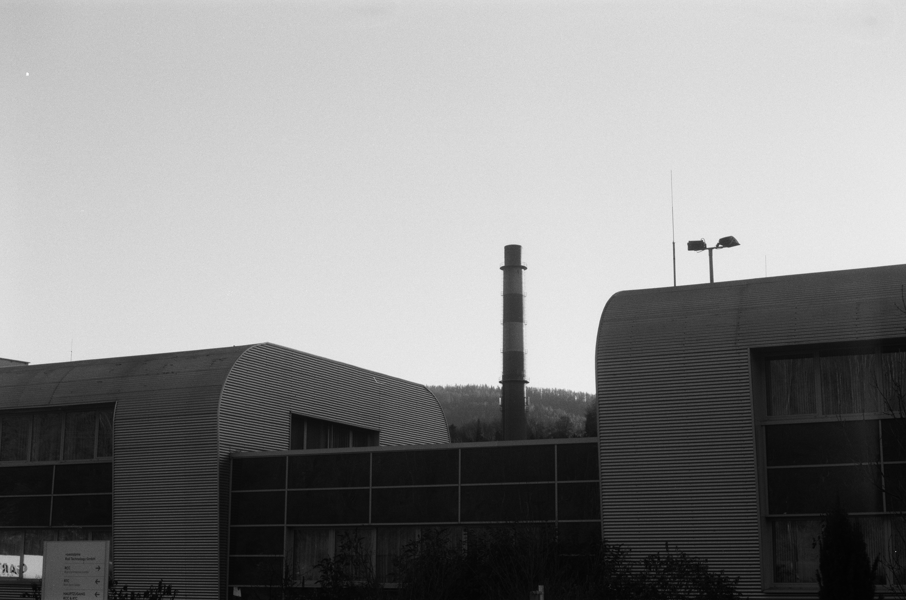
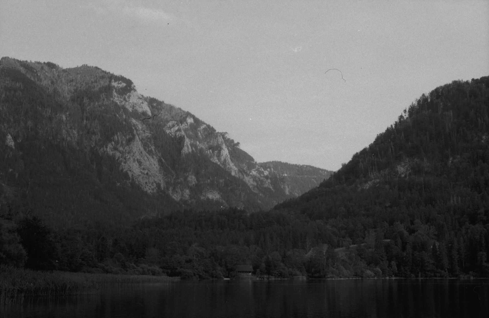
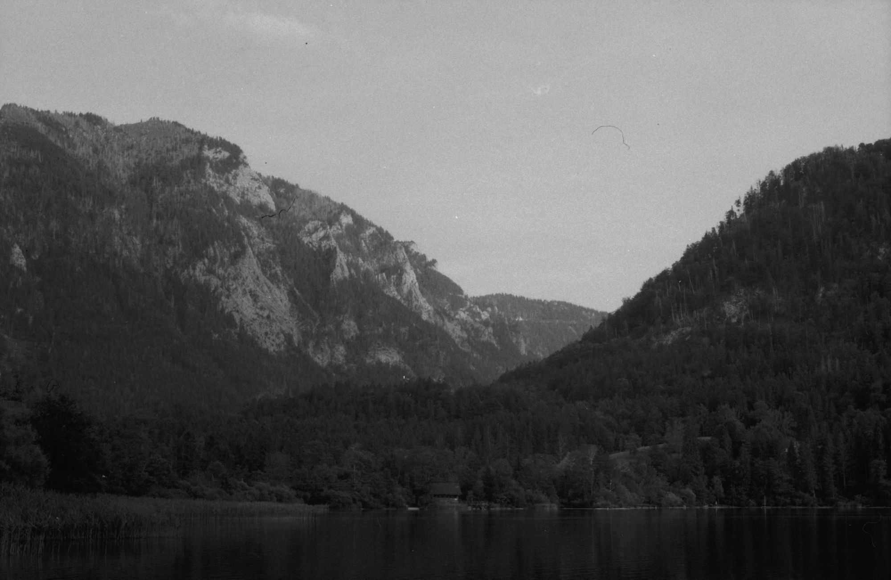
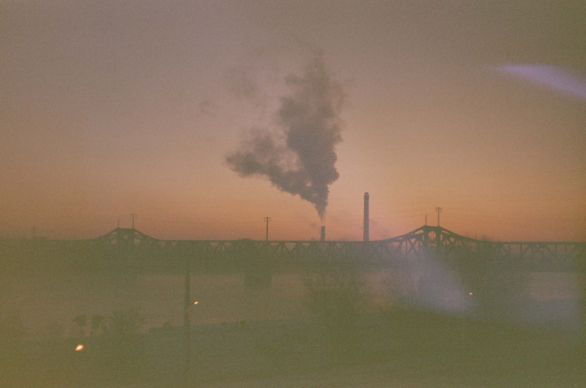
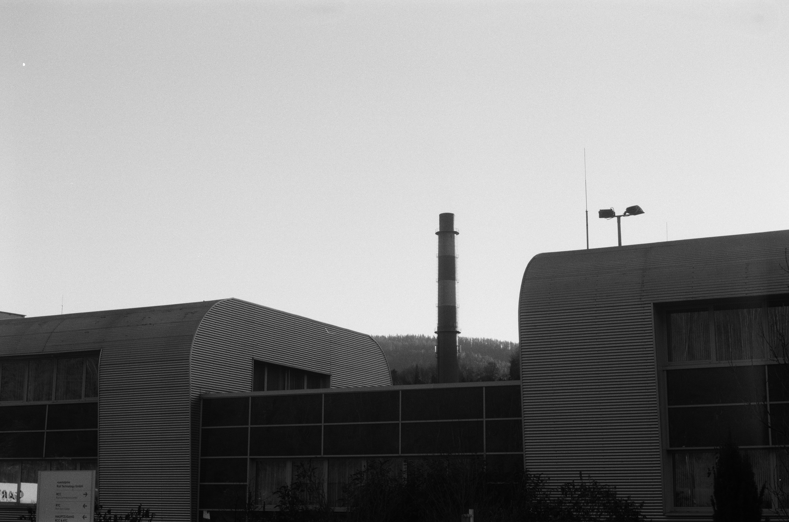
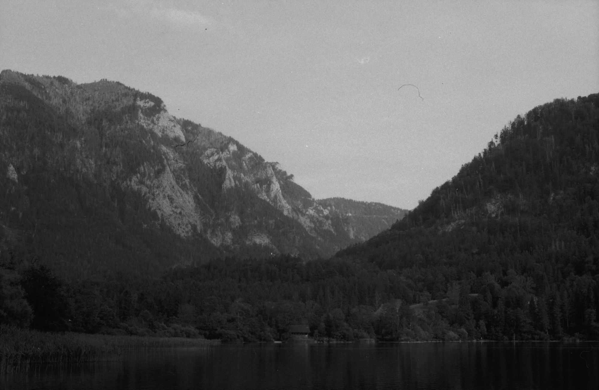
Österreich offenbart sich als ein äußerst attraktives Reiseziel, das eine vielfältige Palette von Natur- und Kulturschätzen für anspruchsvolle Reisende bereithält. Die malerischen Seen, eingebettet in die majestätische Alpenlandschaft, sowie die beeindruckenden Berggipfel bieten nicht nur eine atemberaubende Kulisse, sondern auch zahlreiche Möglichkeiten für Urlaubs- Aktivitäten. Die kulturelle Vielfalt Österreichs manifestiert sich in einer reichen Geschichte und einem Erbe, das von beeindruckender Architektur bis zu herausragender Kunst reicht. Die klassischen Touristenmagneten ziehen zwar viele Besucher an, jedoch hält das Land abseits dieser bekannten Pfade verborgene Schätze bereit. Es sind die weniger frequentierten, aber nicht minder faszinierenden Orte, die wahre Entdecker anlocken. In Österreich verschmilzt Tradition mit Moderne, und diese facettenreiche Symbiose prägt das Erlebnis jedes Reisenden. Wer jenseits des Mainstreams wandelt, wird mit unvergesslichen Momenten belohnt, diese gilt es zu entdecken.